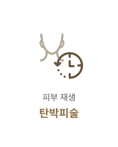

부드러운
인상으로의 변화
#미간주름
제거
-

수술 시간
1시간
-

마취방법
수면/국소마취
-

실밥제거
5~7일 후
-

내원치료
2~3회
-

회복기간
5~7일 후
미간주름 제거란?
미간주름은 찡그리거나 인상 쓸 때 눈썹 사이에 생기는 주름으로 나이가 들어 보이는 것은 물론
화난 듯한 사나운 인상을 줍니다.연세자연미는 미간주름의 원인과 정도에 따라 적합한 시술로
인상을 부드럽게 바꿔주고 주름 개선 효과까지 보여드립니다.
BEFORE
AFTER
-
수술 시간
1시간
-
마취방법
수면/국소마취
-
실밥제거
5~7일 후
-
내원치료
2~3회
-
회복기간
5~7일 후
미간주름 제거수술방법
-
01
미간주름이 약한 경우
보톡스 -
02
미간주름의 자국이 생긴 경우
필러 -
03
미간주름의 심한 경우
미간주름 영구제거 수술
미간주름 제거 핵심 포인트
주름의 확실한 개선을 위해 연세자연미는 자세한 상담과 진단을 통해
가장 효과적인 방법으로 수술을 진행합니다.

근본적인 원인 해결
주름이 원인이 되는 근육을 사용을 제한해
주름이 더 악 화되지 않도록 합니다.

복합 시술
한 가지 시술만 고집하지 않고 환자의
주름 정도에 따라 복합적인 시술을 진행합니다.

테크닉
오랜 경험과 숙련된 기술력 으로
결과에 대한 높은 만족 도를 드립니다.

함께하면좋은 시술
연세자연미성형외과는 개인의 상태에 따른 노화 증상과 원인에 맞는
여러가지 시술들을 복합적으로 진행하는 맞춤형 안티에이징 수술법으로
자연스럽게 젊어지는 아름다움을 선물해드립니다.

- 